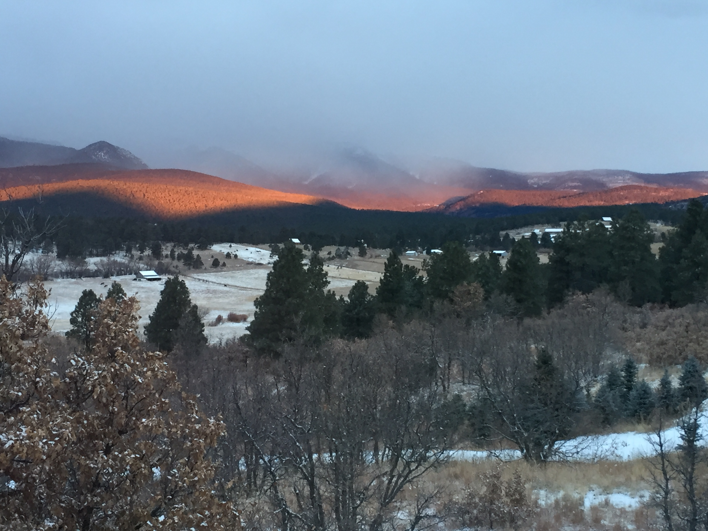

I am currently a senior at New Mexico Highlands University pursuing a Bachelor of Science degree in Computer Science. Prior to attending NMHU, I served for five years in the United States Marine Corps. In the USMC, my military occupational specialty was 6492, PME Calibration Technician. I worked on the flight line closely with Aviation Electronics. It was my passion to pursue something in electronics after my service, and I chose CS!
